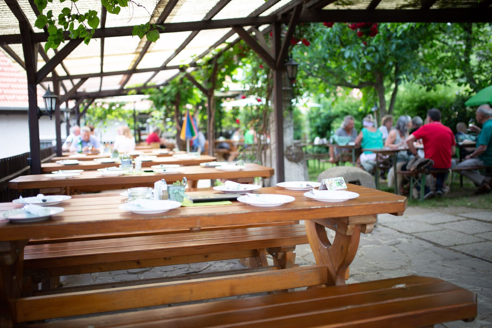
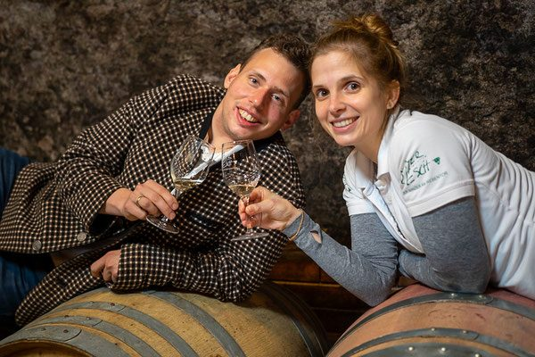
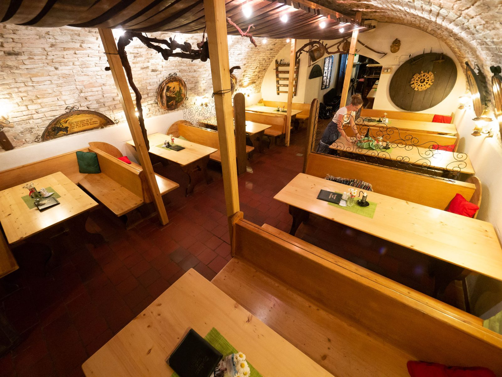

Vier Generationen,
ein Keller aus dem 17. Jahrhundert.
Gegenüber dem Rebentor in der Steiner Kellergasse keltern Barbara und Johannes Beer auf knapp 6 Hektar Grünen Veltliner, Riesling, Rivaner, Weißburgunder, Neuburger, Muskateller und Zweigelt – ausgebaut im 400 Jahre alten Gewölbekeller.

Buschenschank-Termine 2026
Der Heurige sperrt fünfmal im Jahr auf. Montag bis Samstag ab 15:00 Uhr, Sonntag ab 11:30 Uhr – jeweils bis 23:00 Uhr.
- 20.–29. März 2026Frühjahrsheuriger
- 14.–25. Mai 2026mit Steiner Weinfest von 14. bis 16. Mai
- 1.–16. August 2026Sommerheuriger im Gastgarten
- 16.–26. Oktober 2026Sturm, Staubiger und frischer Traubensaft
- 13.–22. November 2026Martini-Heuriger
Musik im Gastgarten
Zwei Abende, an denen im Gastgarten in der Steiner Kellergasse gespielt wird – mitten in der Altstadt von Stein, mit Blick auf Stift Göttweig.
- 5. August, 18:30„Die Harm-losen“ spielen auf
- 11. August, 18:00Dämmerschoppen mit der Stadtkapelle Krems (nur bei Schönwetter)
- 29. & 30. Mai, 13:00–18:00Kremser (W)Einblicke

Drei Mal Gold bei der AWC, vier Mal Gold in Niederösterreich
Die Jahrgangs-Bilanz 2026 aus dem Keller am Rebentor – alle prämierten Weine sind auch im Weinshop erhältlich.
International Wine Challenge
- Weißburgunder 2024
- Donauveltliner 2025
- Blütenmuskateller REBE 2025 (Bio-Weingut Johannes Beer)
Dazu 4× Silber und 2× Seal of Approval.
Landesweinprämierung NÖ
- Weißburgunder Steiner Grillenparz 2024
- Muskateller Steiner Braunsdorfer 2025
- Grüner Veltliner Ried Goldberg Kremstal DAC Reserve 2024
- Blütenmuskateller REBE 2025 (Bio-Weingut Beer)
91 Punkte
91 Falstaff-Punkte für den Grünen Veltliner Stein Kremstal DAC 2025, 89 Punkte für den Riesling Kremstal DAC 2024.
Als Buschenschank seit Frühjahr 2013 „Top-Heuriger“, 2018, 2019 und 2020 mit 2 von 4 Falstaff-Weintrauben bewertet.
Sechs Weine, die gerade besonders gut gehen
Alle Preise inkl. MwSt. Versandkostenfrei innerhalb Österreichs ab 100 €, nach Deutschland ab 150 €. Bitte auf volle 6er- und/oder 12er-Kartons achten.
Grüner Veltliner Stein Kremstal DAC 2025
8,20 € · 91 Falstaff-Punkte, AWC Silber
Grüner Veltliner Ried Goldberg DAC Reserve 2024
11,50 € · NÖ Gold 2026, AWC Seal of Approval 2026
Muskateller 2025
9,50 € · NÖ Gold 2026, AWC Seal of Approval
Zweigelt 2021
9,50 € · NÖ Gold 2023
Grüner Veltliner Landwein
4,20 € · der unkomplizierte Alltagswein
Balsamico-Glace
ab 6,00 € · passt zu Käse und Salat

Fünf Wein-Apartments direkt am Weingut
Rund 20 m², großes Boxspring-Doppelbett, Klimaanlage, kleine Küchenzeile mit Kaffeemaschine, Mikrowelle und Herdplatte, TV & WLAN sowie eigenes Bad mit WC und Dusche.
Buchbar ab zwei Nächten. Frühstück bieten wir nicht selbst an – die Kaffeehäuser der Steiner Altstadt liegen wenige Gehminuten entfernt. Haustiere sind leider nicht möglich.
Unser Durstlöschplatzerl
Weil der Heurige nur wenige Wochen im Jahr offen hat, steht im Gastgarten in der Steiner Kellergasse 38 ein Getränkeautomat: das gesamte Wein- und Sektsortiment, Weisse-Spritzer, Hugo-Spritzer, Rosé-Spritzer, alkoholfreie Getränke und Snacks – gekühlt, rund um die Uhr von 6:00 bis 24:00 Uhr.
Gläser und Becher stehen bereit, man kann also gleich vor Ort Platz nehmen oder mitnehmen. Der Automat akzeptiert Bargeld (5er, 10er oder 20er) und Kartenzahlung. Bitte den Ausweis nicht vergessen – der Jugendschutz wird geprüft.
Neu am Weingut: Weisse-Spritzer, Hugo-Spritzer und Rosé-Spritzer in der 0,33-L-Glasflasche mit Schraubverschluss.

Zwischen Donau und Steiner Weinbergen
Wer sich in Stein von der alten Stadtmauer leiten lässt, steht irgendwann vor dem Rebentor – und damit direkt gegenüber unserem Haus. Das Tor ist seit jeher unser Zeichen. Rundherum: Weineinkauf, Weinverkostung, Riedenwanderung, Heurigenbesuch und Rätselrallye.
Weinverkostung
Verkostungen, Kellerführungen und Riedenwanderungen nach Terminvereinbarung ab 10 Personen.
Rätselrallye
Rund eine Stunde Suchspaß am Steiner Weinberg oder in der Altstadt. Erwachsene 8 €, Kinder ab 3 Jahren 3 €.
Ab-Hof-Verkauf
Täglich nach telefonischer Voranmeldung unter +43 650 88 91 920.
Eigene Etiketten
Ab 60 Flaschen gestalten wir ohne Mehrkosten Ihr Etikett – für Hochzeit, Taufe oder Firmenfeier.